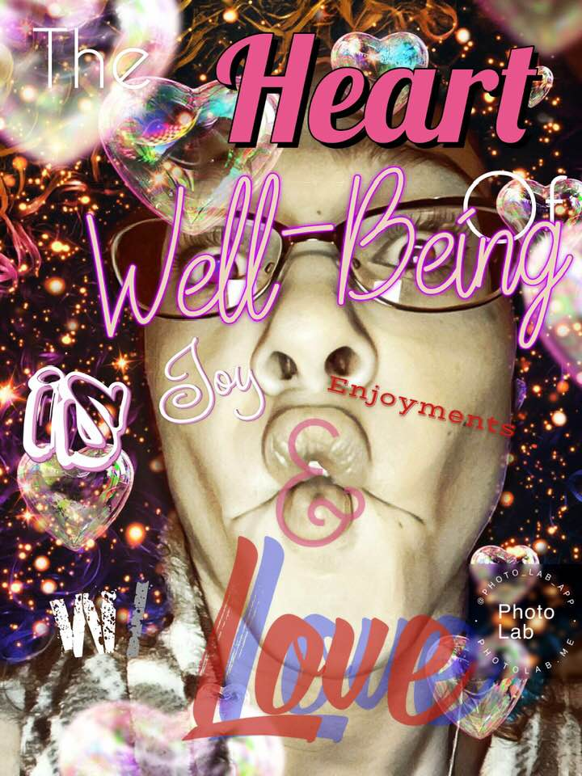
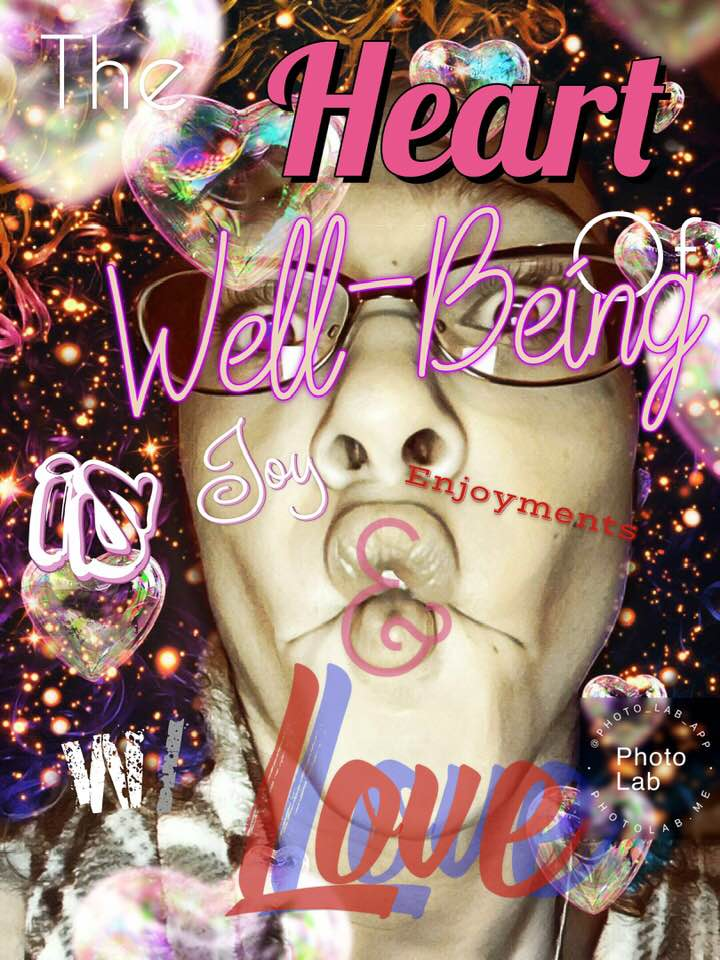

I suddenly began to design these one day just for fun, really. It grew and more words joined the word play more personal statements needed to be made visual and so thus the collage you see now came into being.


 
